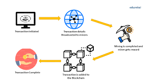

Blockchain is a system of recording information in a way that makes it difficult or impossible to change, hack, or cheat the system. A blockchain is essentially a digital ledger of transactions that is duplicated and distributed across the entire network of computer systems on the blockchain. Each block in the chain contains a number of transactions, and every time a new transaction occurs on the blockchain, a record of that transaction is added to every participants ledger. The decentralised database managed by multiple participants is known as Distributed Ledger Technology (DLT). Blockchain is a type of DLT in which transactions are recorded with an immutable cryptographic signature called a hash.
Every chain consists of multiple blocks and each block has three basic elements: The data in the block. A 32-bit whole number called a nonce. The nonce is randomly generated when a block is created, which then generates a block header hash. The hash is a 256-bit number wedded to the nonce. It must start with a huge number of zeroes (i.e., be extremely small). When the first block of a chain is created, a nonce generates the cryptographic hash. The data in the block is considered signed and forever tied to the nonce and hash unless it is mined.
Miners create new blocks on the chain through a process called mining. In a blockchain every block has its own unique nonce and hash, but also references the hash of the previous block in the chain, so mining a block isn't easy, especially on large chains. Miners use special software to solve the incredibly complex math problem of finding a nonce that generates an accepted hash. Because the nonce is only 32 bits and the hash is 256, there are roughly four billion possible nonce-hash combinations that must be mined before the right one is found. When that happens miners are said to have found the "golden nonce" and their block is added to the chain. Making a change to any block earlier in the chain requires re-mining not just the block with the change, but all of the blocks that come after. This is why it's extremely difficult to manipulate blockchain technology. Think of it is as "safety in math" since finding golden nonces requires an enormous amount of time and computing power. When a block is successfully mined, the change is accepted by all of the nodes on the network and the miner is rewarded financially.
One of the most important concepts in blockchain technology is decentralization. No one computer or organization can own the chain. Instead, it is a distributed ledger via the nodes connected to the chain. Nodes can be any kind of electronic device that maintains copies of the blockchain and keeps the network functioning. Every node has its own copy of the blockchain and the network must algorithmically approve any newly mined block for the chain to be updated, trusted and verified. Since blockchains are transparent, every action in the ledger can be easily checked and viewed. Each participant is given a unique alphanumeric identification number that shows their transactions. Combining public information with a system of checks-and-balances helps the blockchain maintain integrity and creates trust among users. Essentially, blockchains can be thought of as the scaleability of trust via technology.